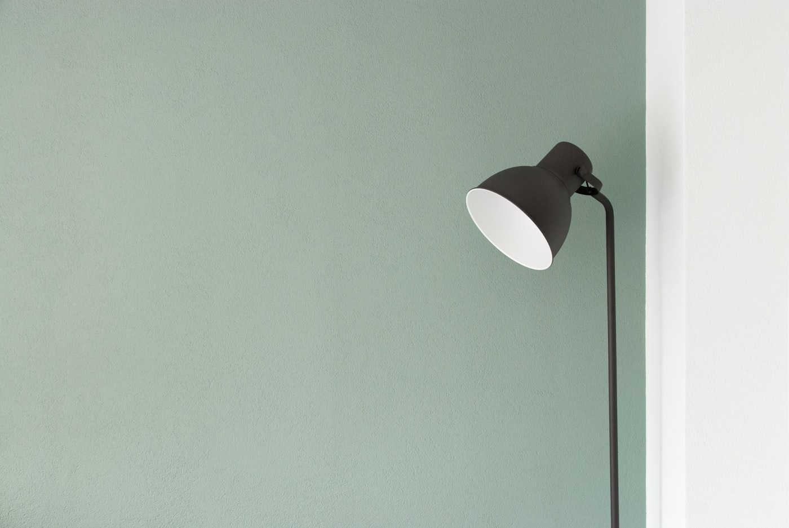

Neuropsicologia · Consultas online
A ciência do comportamento ao serviço da sua mudança.
Acompanho pessoas que vivem com adições, compulsão e desregulação emocional — com rigor científico, escuta atenta e um plano feito à medida de quem está à minha frente.

NeuropsicologiaAvaliação e intervenção
AdiçõesQuímicas e comportamentais
EvidênciaPrática baseada na ciência
Sobre mim
Olá, sou a Carolina.
Sou neuropsicóloga e dedico a minha prática a um território exigente e profundamente humano: o das adições químicas e comportamentais. Interessa-me aquilo que acontece entre o cérebro e o comportamento — os mecanismos do craving, da impulsividade e da compulsão — e, sobretudo, o que podemos fazer para os transformar.
O meu percurso académico e clínico cruza a neuropsicologia com a compreensão das dependências. Trabalho com base na evidência científica mais atual, mas sem nunca perder de vista a pessoa: cada plano nasce da sua história, do seu ritmo e dos seus objetivos.
Acredito que entender o que se passa dentro de nós devolve sentido de controlo. O meu papel é traduzir a ciência em passos concretos — e caminhar consigo, com firmeza e proximidade, em cada um deles.
«Não há mudança sem compreensão. E não há compreensão sem uma relação de confiança.»
Áreas de intervenção
Onde posso ajudar
Diferentes problemas, um fio condutor comum: a forma como o cérebro regula o impulso, a recompensa e a emoção. Estas são as áreas centrais do meu acompanhamento.
-
Adições químicas
Álcool, tabaco e outras substâncias. Compreender a dependência e construir alternativas sustentáveis.
-
Adições comportamentais
Jogo, ecrãs, compras ou outros comportamentos que escapam ao controlo e ocupam um espaço excessivo na vida.
-
Craving
O desejo intenso e súbito. Aprender a reconhecê-lo, a tolerá-lo e a desativá-lo antes que decida por si.
-
Compulsão
Atos repetidos que aliviam a curto prazo e pesam a longo prazo. Quebrar o ciclo com estratégias eficazes.
-
Impulsividade
Agir antes de pensar. Ganhar a pausa entre o impulso e a resposta — onde mora a liberdade de escolher.
-
Funcionamento executivo
Atenção, planeamento, memória de trabalho e controlo inibitório — as funções que organizam o dia a dia.
-
Autorregulação emocional
Lidar com emoções intensas sem ser dominado por elas. Mais espaço entre o que sente e o que faz.
-
Ansiedade e stress
Quando o corpo e a mente vivem em alerta permanente. Recuperar calma, foco e energia.
Como funciona
Consultas online, simples e seguras
O acompanhamento é totalmente online, para que possa ter as suas consultas onde se sentir mais confortável — esteja onde estiver. Tudo começa com uma primeira conversa.
Marcar consulta-
Consultas online
Por videochamada, em ambiente privado e tranquilo. Sem deslocações, com a mesma proximidade.
-
Duração
Cada sessão tem cerca de 50 minutos. A frequência é definida em conjunto, de acordo com os seus objetivos.
-
Plataforma
Usamos uma plataforma de videochamada segura e fácil. Recebe o link por email antes de cada sessão.
-
Confidencialidade
Tudo o que partilha é estritamente confidencial e protegido pelo sigilo profissional. Um espaço seguro, sem julgamento.
-
Acompanhamento
Entre sessões, conta com um plano claro e com a continuidade necessária para que os ganhos se mantenham no tempo.
Perguntas frequentes
Dúvidas comuns
Se ficar com outra questão, escreva-me — terei todo o gosto em esclarecê-la antes de começarmos.
Como marco a minha primeira consulta?
É simples: contacte-me por telefone ou email (em baixo, na secção de contacto). Combinamos um horário e recebe toda a informação para a primeira sessão.
As consultas são mesmo eficazes em formato online?
Sim. A investigação mostra que o acompanhamento psicológico online tem resultados comparáveis ao presencial. Ganha em comodidade e continuidade, sem perder profundidade.
Preciso de ter um diagnóstico para marcar?
Não. Pode procurar ajuda mesmo que ainda não tenha a certeza do que se passa. A primeira consulta serve precisamente para perceber, em conjunto, o que está a acontecer.
A adição é uma falta de força de vontade?
Não. A adição envolve alterações reais nos circuitos cerebrais da recompensa e do controlo. Compreender isto é libertador — e abre caminho a estratégias que realmente funcionam.
Quanto tempo dura o acompanhamento?
Depende de cada pessoa e dos seus objetivos. Alguns processos são mais curtos e focados; outros pedem mais tempo. Definimos sempre um caminho claro, revisto ao longo do percurso.
O que partilho fica confidencial?
Absolutamente. Tudo o que diz está protegido pelo sigilo profissional e por princípios éticos rigorosos. É um espaço seguro, privado e sem julgamento.
Marcação · Contacto
Vamos começar?
Dar o primeiro passo é, muitas vezes, o mais difícil. Pode contactar-me diretamente por telefone ou email para marcar a sua consulta ou esclarecer qualquer dúvida. Respondo com a maior brevidade possível.
Consultas online · Horário a combinar · Português e Inglês